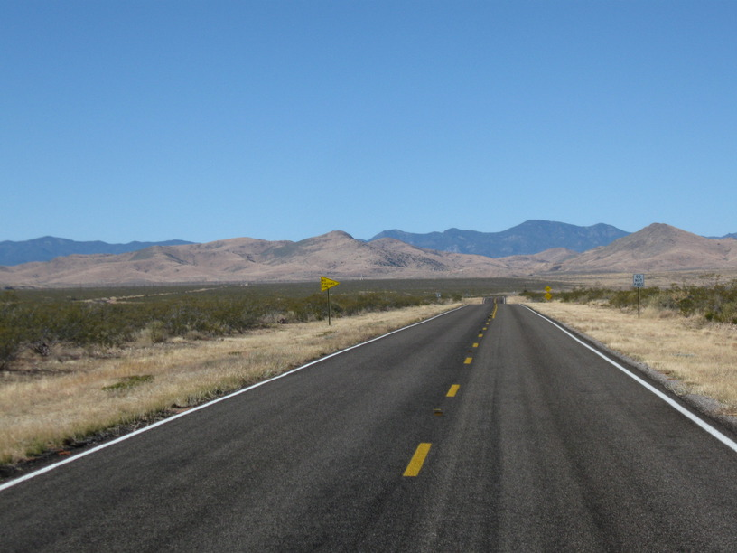
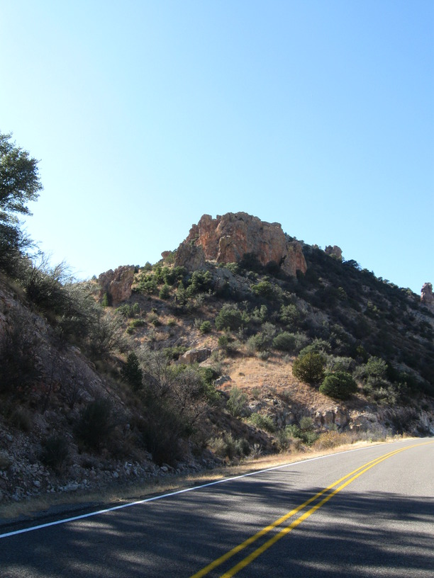
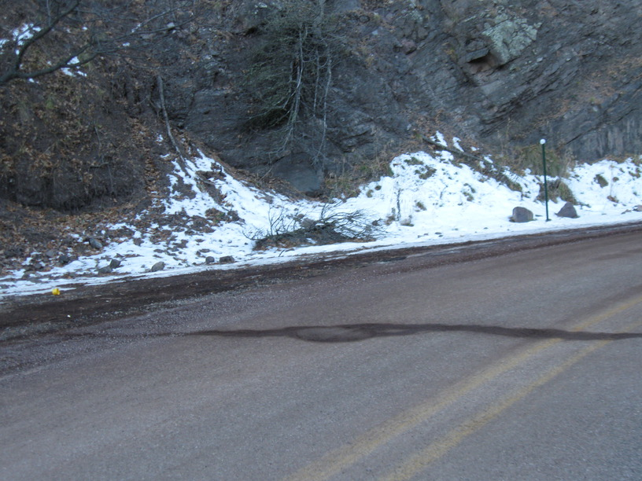
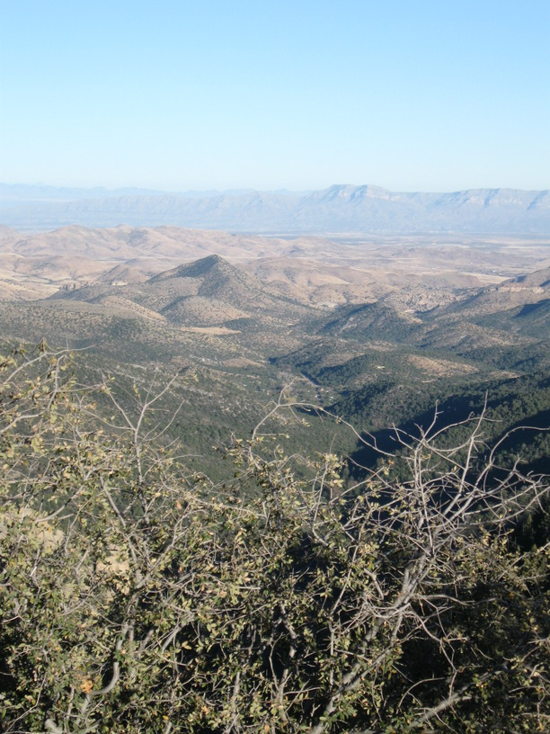
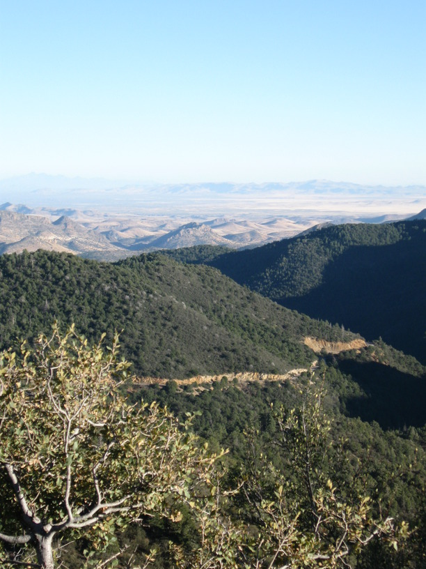
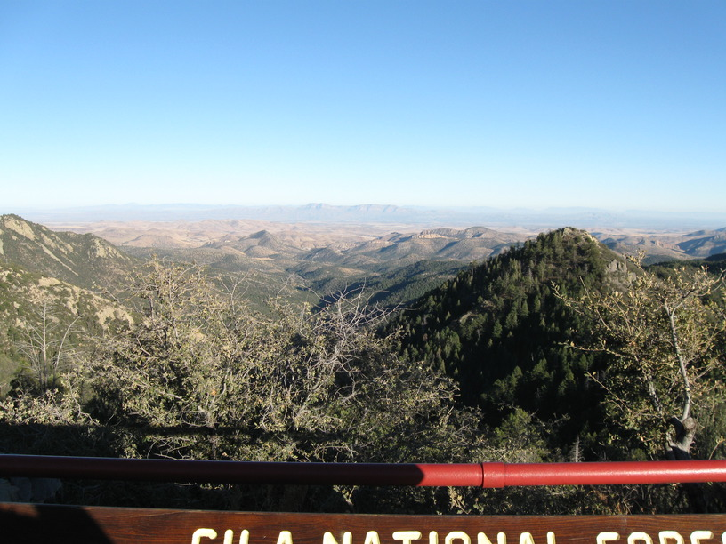
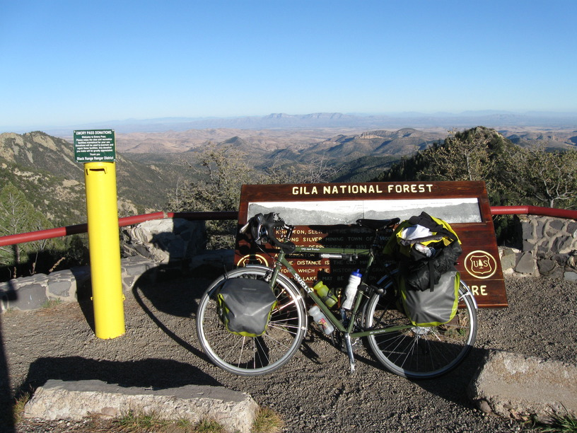
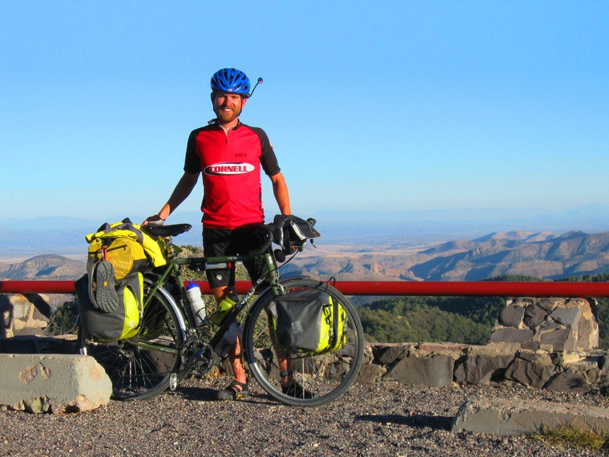

19 Nov 2008, Hanover, NM
I climbed a mountain today! Emory pass, at 8,228 ft, is the highest point on this trip. It was about 4000' higher than where I started this AM. It wasn't particularly steep, but it was just a long time chugging up the hill. I left just before 9am, & I reached the top of the pass about 3:45pm—only 38 miles later. The downhill was a treat, of course, except that it also had some uphill sections.
As I ate lunch in Hillsboro, NM, a man came up & we started talking. He was working to write a book of his (recently deceased) grandmother's life store. He was a nice guy & had some insight into local history that he shared.
My host tonight is Pat, who I found through Warm Showers. She keeps a scrapbook of all the cyclist who've come through, and she can tell stories about each of them. She also fed me well & set me up with some cookies to take along on my trip.
Tomorrow is the Gila Cliff Dwellings. Should be pretty cool.







